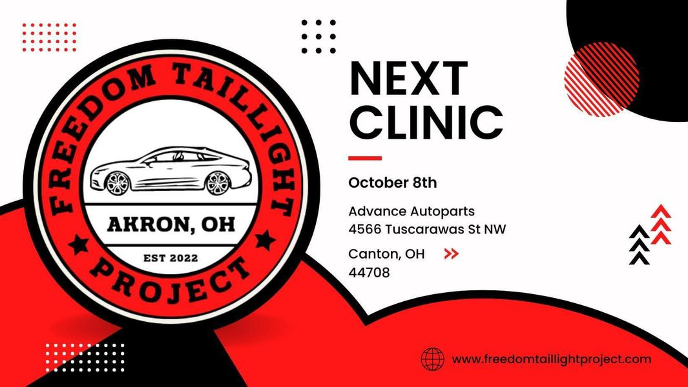

Timeline photos
My friend @[537537541:2048:Skylark Bruce] just pointed this out to me.
A Black person with a burned out taillight can be a death sentence.
She writes: "In addition to us replacing burned out taillight bulbs, I’m making chili and cornbread, we will have a baked potato bar, watermelon, and pasta salad. All free!"
The next Freedom Taillight Project is going to be at Advance Autoparts at 4566 Tuscarawas St. NW in Canton on October 8.
It's from 12-5.